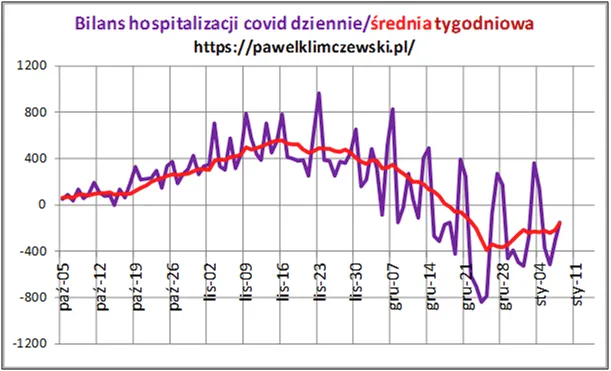
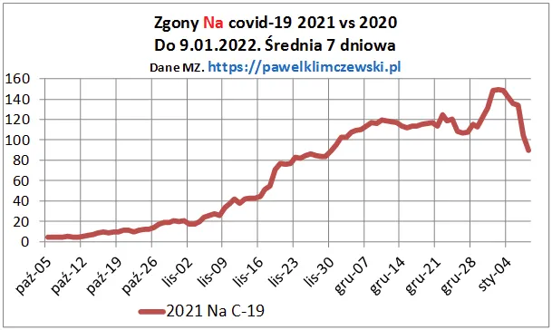
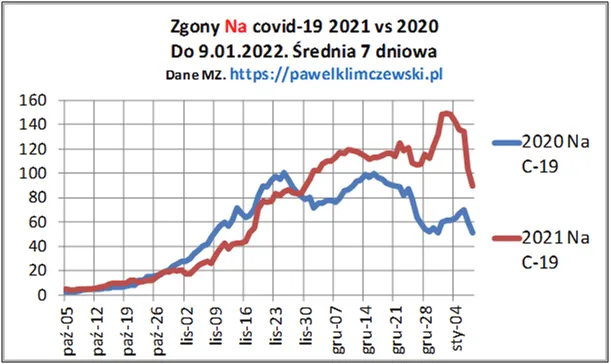

Każdy chce sobie poświętować, medycy też.
Na Boże Narodzenie gwałtownie spadł bilans hospitalizacji. Wielu wypisano do domu a nowych pacjentów teoretycznie nie było. Przybyło wolnych łóżek!

Poza liczbami, mam dziś prostą historię, jakich w Polsce było już setki tysięcy. Silny facet w kwiecie wieku dzwoni w połowie grudnia do swego lekarza, objawy typowo przeziębieniowe. Zalecenie: leżeć. Po kilku dniach jest coraz gorzej, teleporada: leżeć. Człowiek trafia do tzw. "podziemia medycznego", gdzie badają, nie potrzebują testów, itp. Rozpoznanie: bakteryjne zapaleni płuc, stan ostry. Pogotowie, wymaz, covid... Człowiek szczęśliwie wrócił do domu. Wygląda, że tylko dlatego, że zadział wbrew zaleceniom systemu. Liczyły się już godziny.

Do tej historii niestety psuje wykres pokazujący setki zgonów po świątecznym zwolnieniu w dynamice hospitalizacji. Dokładnie tydzień później mamy nienaturalny wzrost zgonów.
Często wracam do tego, że procesy naturalne, takie jak np. sezonowe zachorowania i zgony , mająprzebiegi opisane linami o spokojnych kształtach. Dziwnie układające się wykresy sugerują udział czynnika ludzkiego. Tak ocenił kształt krzywej zgonów w Bergamo emerytowany, wieloletni szef szwedzkich służb epidemiologicznych.
Wieczny odpoczynek racz dać Panie tym, którzy na Święta pozostali tylko z gorączką i telefonem. Amen.
Dodam wykres zgonów w porównaniu z rokiem ubiegłym, przed "szczepionką". Szkoda pisać więcej, porażka 123%, taka proporcja jesień do jesieni.

Paweł Klimczewski